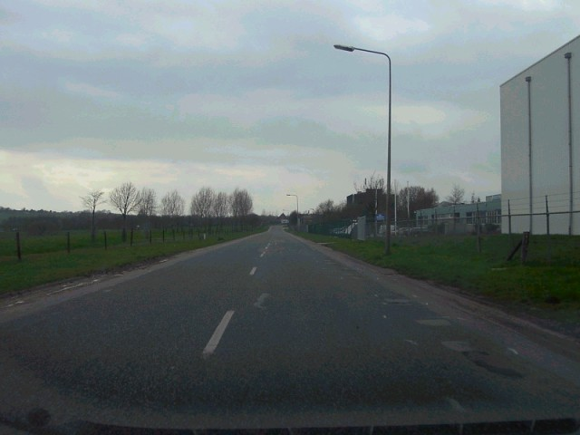
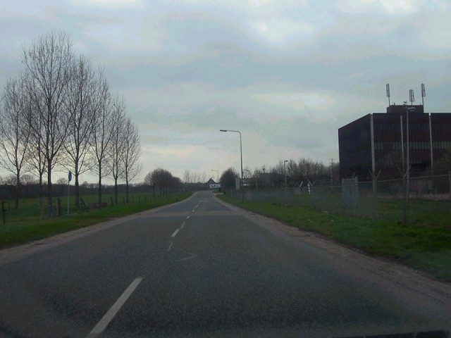
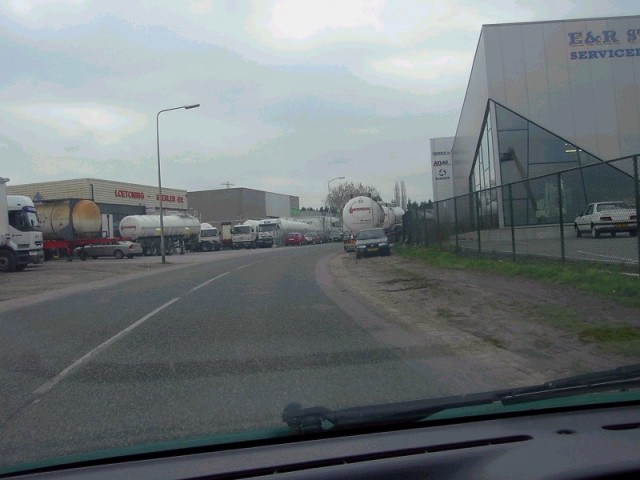
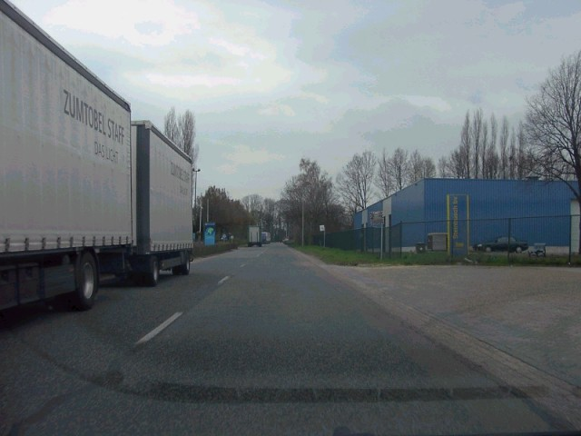
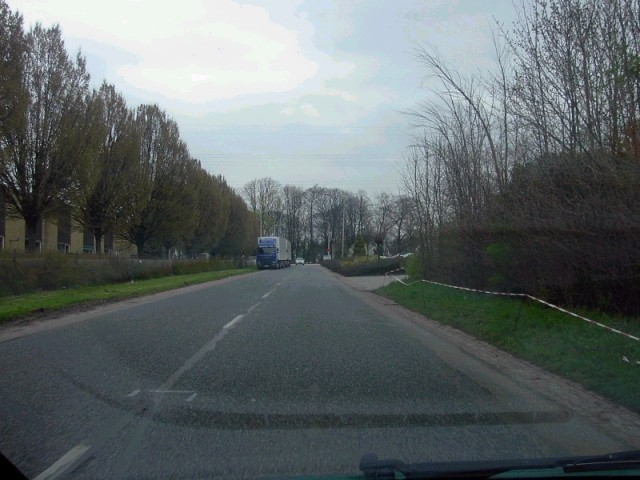
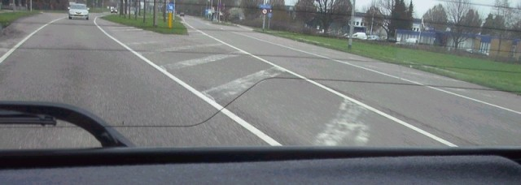

Circuit 'De Beitel', Heerlen - Sourethweg
|| Contents | Oude Roderweg | Nijverheidsweg | Sourethweg || Home ||
Click on the hyperlinks above to view photographs of that
section.
The numbers and arrows on the map represent the location and direction of where
each of the photographs were taken.

12 - On the 'Sourethweg', heading in the direction of the 'Imstenraderweg'

13

14

15

16

17 - On the 'Imstenraderweg' looking back on the 'hairpin'
Photographs & Text ©Roelard Smit. Reproduced here with kind permission.